Kahoku, Ishikawa: things to do, food and stays
Kahoku · Ishikawa
Kahoku
Highlighted on the Ishikawa map.
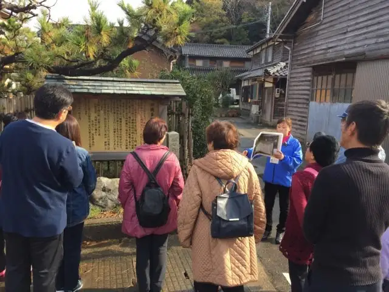
Stay
河北亭
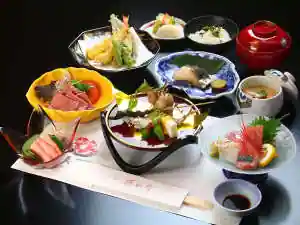
Kahoku Tei
Inn in Takamatsuna, Kahoku with kaiseki dinners and business travelers.
Dining
寿司処 松の
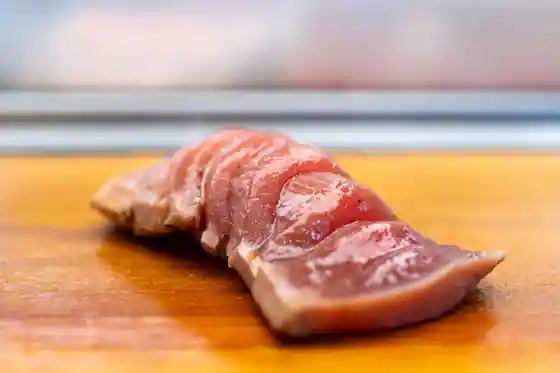
Sushi Tokoro Matsu No
菜虫化蝶
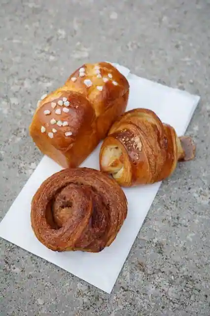
Na Mushi Kacho
海鮮丼 わら
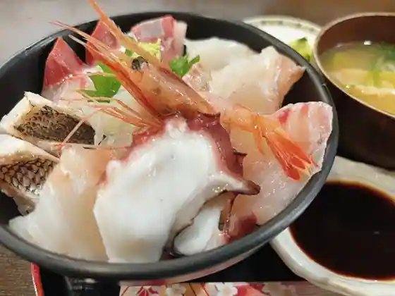
Kaisen Donburi Wara
石臼自家挽き蕎麦 かめや
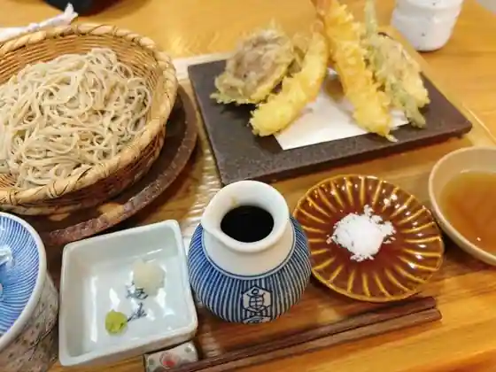
Ishiusu Jika Hiki Soba Kameya
道の駅 高松
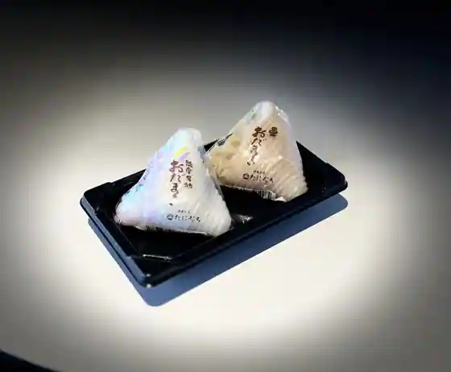
Michi No Eki Takamatsu
シェ・ミノール
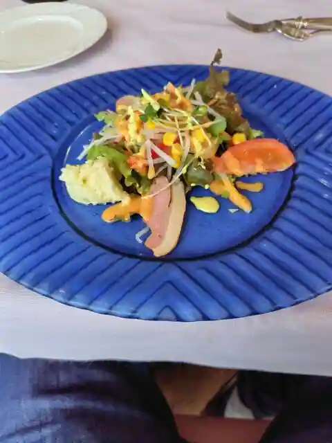
Shie Minoru
やまじゅう
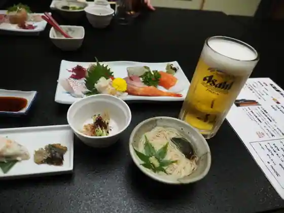
Yamaju
さぶろうべい 高松本店
Saburobei Takamatsu Hon
川義
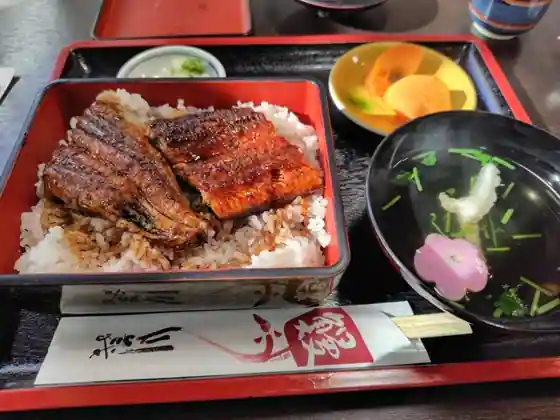
Kawa Gi
ほそ川
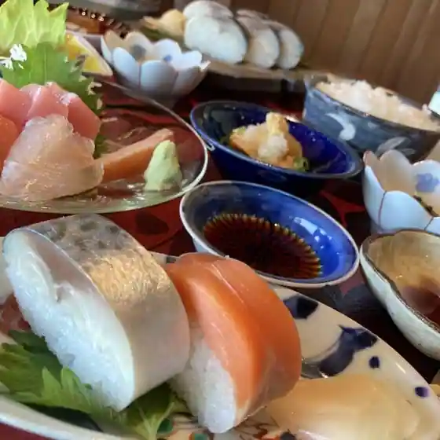
Hoso Kawa
宇野気 玉寿司
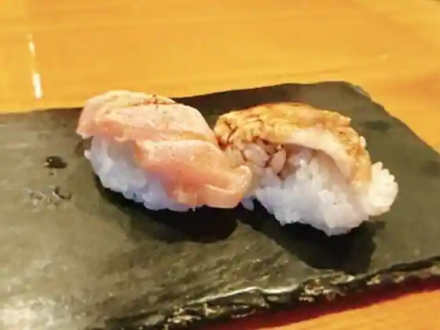
Uno Ki Tamazushi
ら～めん王蘭
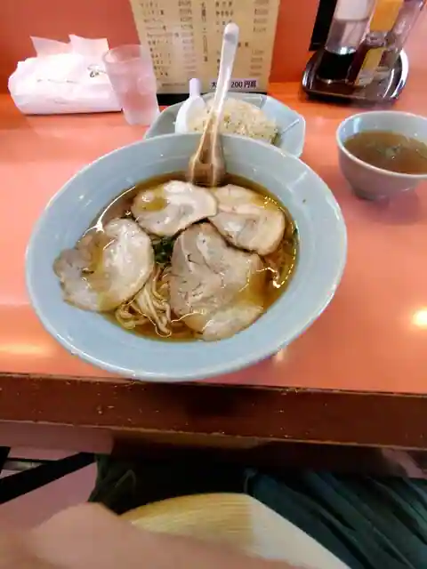
Ra ~ Men O Ran
ぶどうの森 イオンかほくSC店
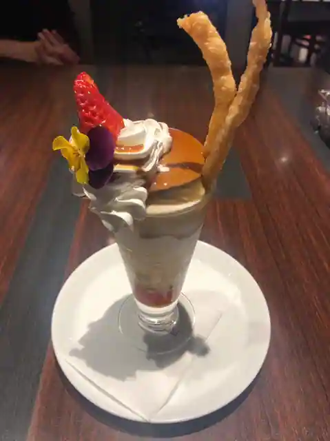
Budono Mori Ion Kahoku SC
79 KITCHEN
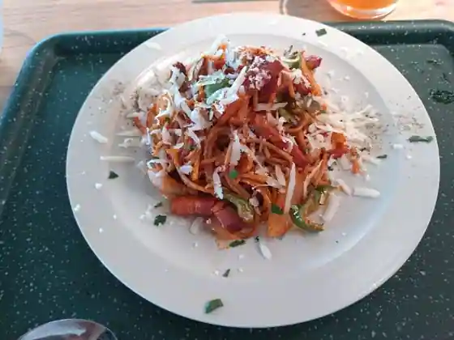
79 KITCHEN
金澤家
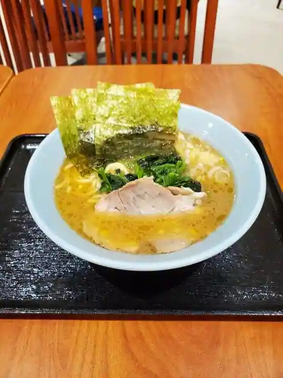
Kanazawa Ie
カフェマダムルロワ
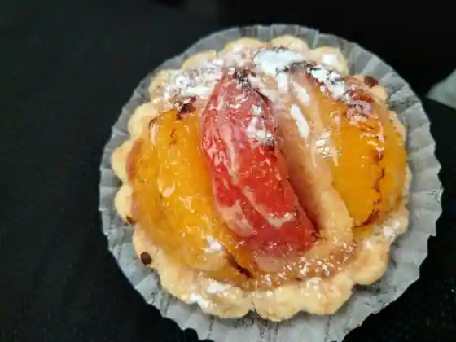
Cafe Madamururowa
鮨・会席 りょう門
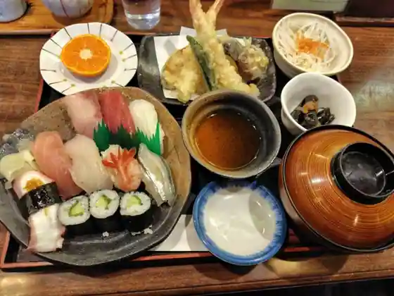
Sushi Kaiseki Ryo Mon
ポム ポム ポム
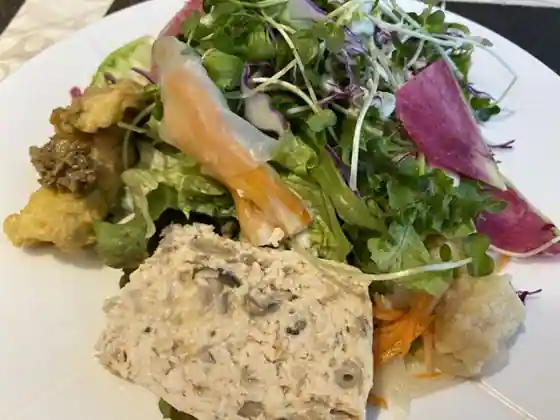
Pomu Pomu Pomu
チャンピオンカレー かほく店
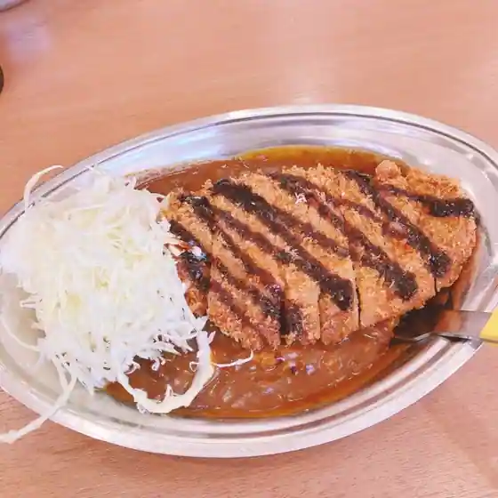
Chanpionkare Kahoku
INTERNATIONAL HALAL RESTAURANT
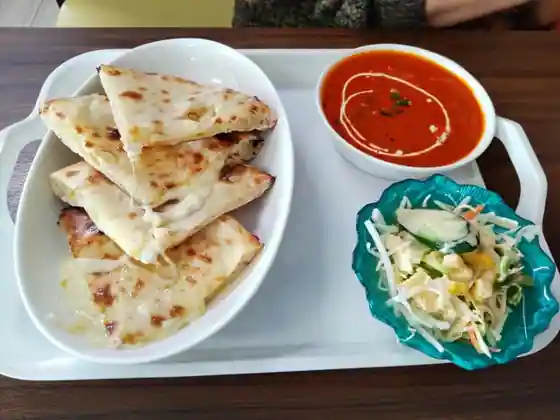
INTERNATIONAL HALAL RESTAURANT
Tomoru creperie
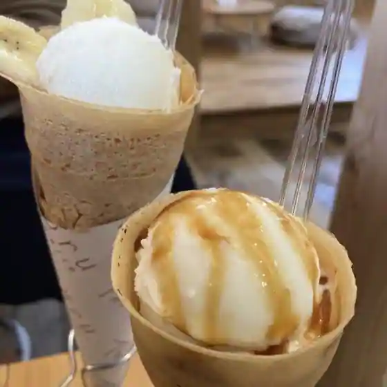
Tomoru creperie
もりもり寿し イオンかほく店
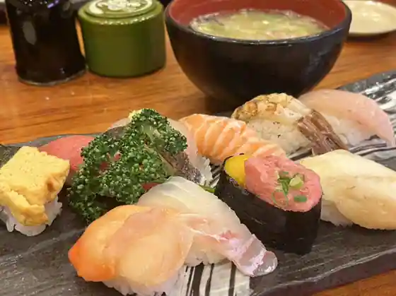
Morimori Hisashi Shi Ion Kahoku
モリタパン
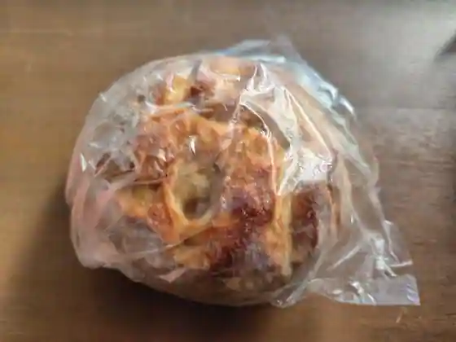
Morita Bakery
横濱家系らーめん 元喜家 かほく店
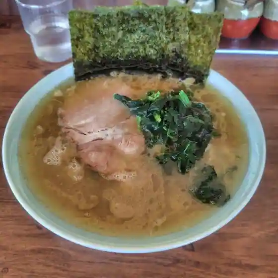
Yokohama Kakei Ramen Moto Ki Ie Kahoku
Sights
Roadside Station Takamatsu
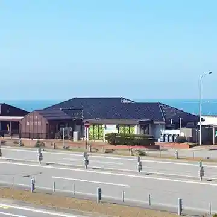
Ishikawaken Nishida Kitaro Kinen Tetsugaku Kan
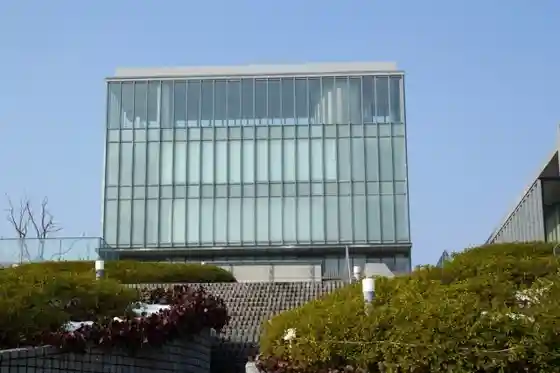
Nishida Kitaro Kinen Tetsugaku Kan (Tetsugaku no Mori) Raitoappu
Nanatsuka Chuo Park
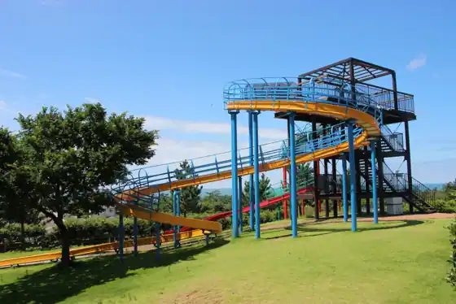
Sakanaryori Minshuku
Umikkorando Nanatsuka Umi to Nagisa no Museum
U no Ke General Park
KAJI FACTORY PARK
Kita Ie Shidare Sakura
Takamatsu Hokubu Beach
Kyu Shirao Lighthouse Onigayama
Kamo Shrine
Kahoku Boranteia Kanko Gaido (Kahoku Yume Annai Sumairu)
Akurosu Takamatsu (Joiakurosu)
Kochi Tanibayashi Michi no Sakura Michi
Takamatsu Rekishi Park
Taikai Nishiyama Yayoi Village
Kamiyamada Kaizuka (Kuni Shitei Historic Site)
Naka Town Tori no Sakura Namiki
Kahoku Yakusho